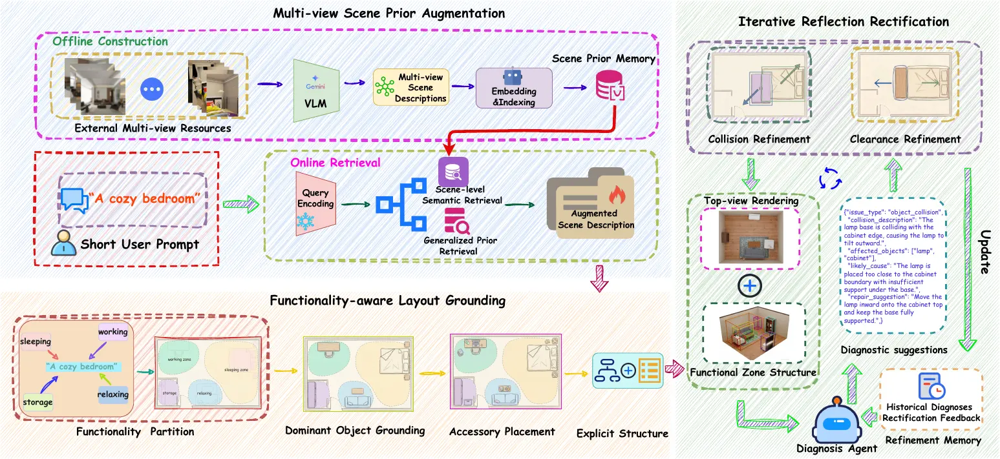
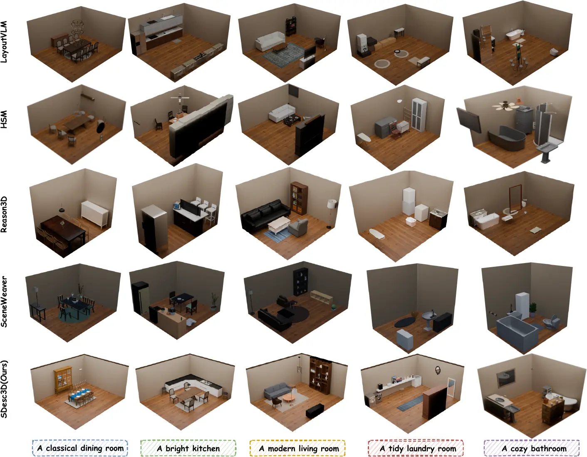
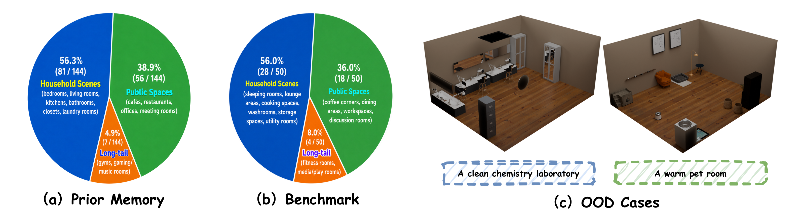
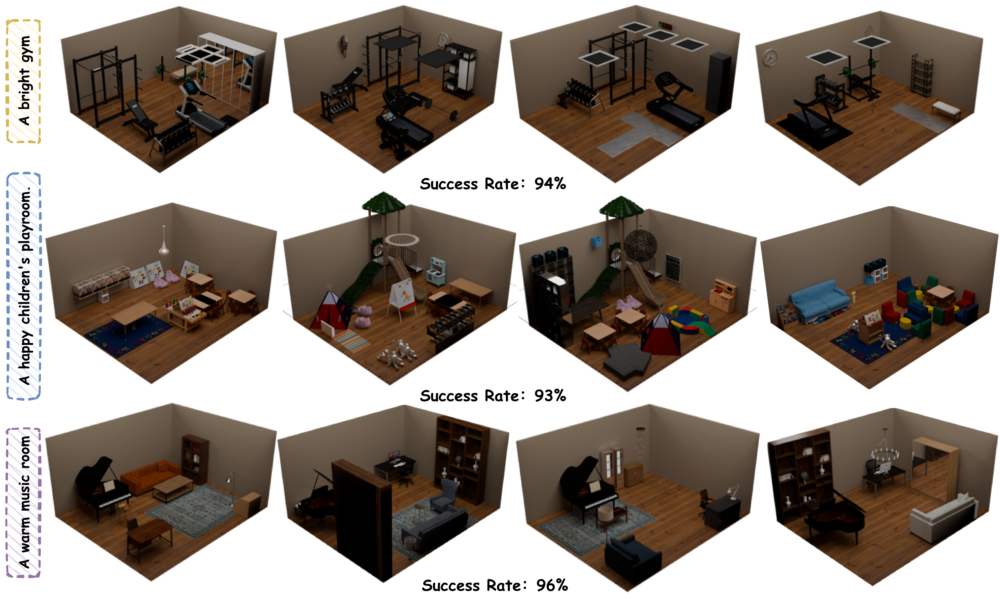
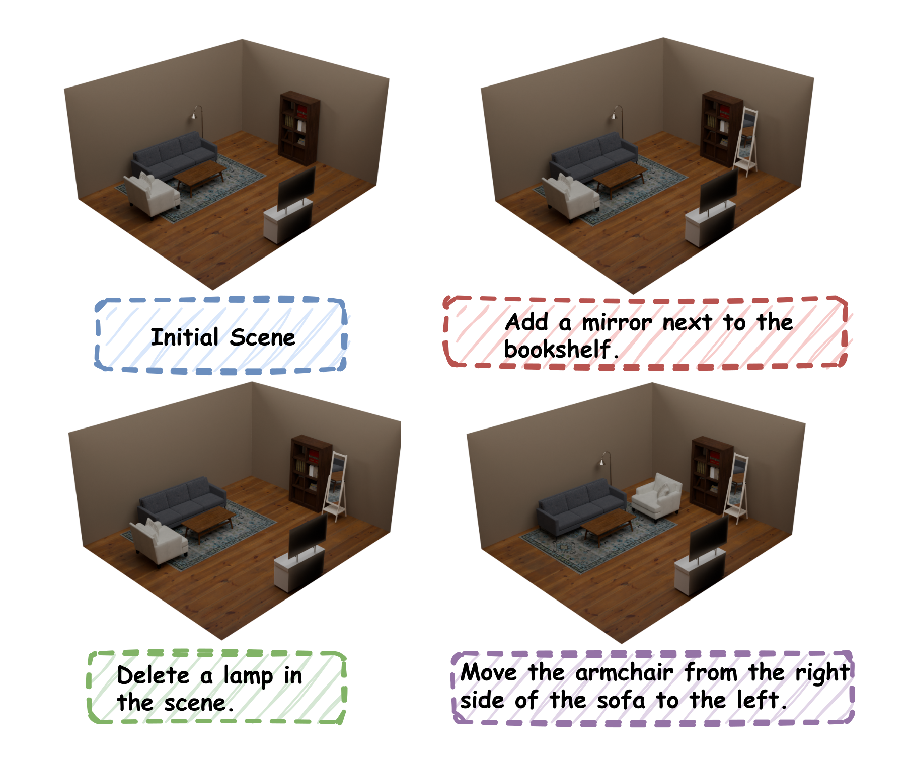

Multi-view Scene Prior Augmentation
Builds a semantic prior memory from multi-view indoor scenes and retrieves generalized object and relation knowledge to enrich underspecified prompts.
3D Indoor Scene Generation
The problem
3D indoor scene generation conditioned on short textual descriptions provides a promising avenue for interactive 3D environment construction without the need for labor-intensive layout specification. Despite recent progress in text-conditioned 3D scene generation, existing works suffer from poor physical plausibility and insufficient detail richness in such semantic condensation cases, largely due to their reliance on explicit semantic cues about compositional objects and their spatial relationships.
We propose SDesc3D, a short-text conditioned 3D indoor scene generation framework that leverages multi-view structural priors and regional functionality implications to enable 3D layout reasoning under sparse textual guidance. SDesc3D combines Multi-view Scene Prior Augmentation, Functionality-aware Layout Grounding, and Iterative Reflection-Rectification. Extensive experiments demonstrate superior overall performance and robustness for short-text conditioned 3D indoor scene generation.
Approach
Given a short prompt, SDesc3D first retrieves multi-view scene priors for sparse semantic completion, then constructs a functionality-aware hierarchy, and finally refines the layout with memory-conditioned diagnosis and targeted rectification.

Builds a semantic prior memory from multi-view indoor scenes and retrieves generalized object and relation knowledge to enrich underspecified prompts.
Converts inferred functionalities into spatial anchors and performs coarse-to-fine reasoning from functional zones to dominant objects and accessories.
Uses historical diagnoses, geometric grounding, and violation-specific tools to progressively reduce collisions, boundary violations, and clearance errors.
Experiments
Across five different short descriptions, SDesc3D recovers richer object sets and more coherent layouts while reducing visually apparent conflicts.

Generated scenes
Main results
| Method | Collision ↓ | OOB ↓ | AI-Avg Gemini ↑ | AI-Avg GPT-5.4 ↑ | User-Avg ↑ |
|---|---|---|---|---|---|
| LayoutVLM | 20.68% | 16.44% | 8.01 | 7.76 | 7.02 |
| HSM | 9.36% | 8.67% | 8.51 | 8.22 | 7.48 |
| Reason3D | 18.62% | 12.55% | 8.44 | 8.20 | 7.22 |
| SceneWeaver | 10.42% | 7.20% | 8.43 | 8.24 | 7.53 |
| SDesc3D | 5.36% | 7.70% | 9.06 | 8.74 | 8.71 |
Short-text setting. Semantic scores use a 10-point scale. Lower is better for Collision and OOB; higher is better for AI-Avg and User-Avg.
Beyond the benchmark

Recognizable functional organization is retained even when closely matched priors are limited.

Repeated runs preserve functional structure while producing meaningful variations in object placement and local arrangement.

The same representation supports localized object addition, deletion, and relocation without disrupting the overall layout.
Citation
@article{shen2026sdesc3d,
title={SDesc3D: Towards Layout-Aware 3D Indoor Scene Generation from Short Descriptions},
author={Feng, Jie and Shen, Jiawei and Huang, Junjia and Zhang, Junpeng and Feng, Mingtao and Dong, Weisheng and Li, Guanbin},
journal={arXiv preprint arXiv:2604.01972},
year={2026}
}